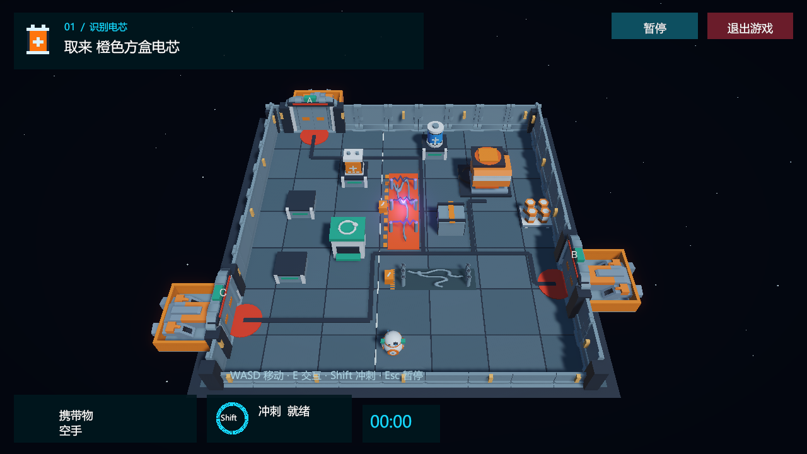

机器人与动作 · 可复用
移动、滚动与转头、冲刺、碰撞、触电失速已存在。PlayerMotor 提供移动输入与冲刺请求；AI 可以操控现在这一个 M-07。
工程实查 · 2026-10-03 · Station Rescue: M-07
现有游戏与素材足够起步 B 和 C；D 的导航与基础前置条件任务也能复用。D 的记忆任务需要改变信息呈现和关卡结构。
A 是已经可玩的课程游戏；B、C、D 是后续 AI 研究路线。当前工程尚未接入外部智能体。这次完成的是工程检查和实施说明，A1.0 的课程包保持冻结。
移动、滚动与转头、冲刺、碰撞、触电失速已存在。PlayerMotor 提供移动输入与冲刺请求；AI 可以操控现在这一个 M-07。
两种电芯、充电架、回收柜、发电机、三个随机港口、通电动画与登船交互已组成“识别 → 搬运 → 安装 → 撤离”。
工程已导入 Kenney 的发电机、气闸、管道、平台、栏杆、货船等模型。门禁卡、符号牌、控制台可以先用现有模型与简单图标制作。
Packages/manifest.json 中没有 ML-Agents；没有实验入口、外部动作适配器和模型运行器。现有接口是基础，整条通信链仍需要实现。
Windows 验证程序能捕获实际屏幕。HUD 使用 ScreenSpaceOverlay；接相机传感器时必须验证收到的图像确实包含约定的任务与交互信息。
当前重开通过重新加载 Game 场景；StationPlan.Create(seed) 能固定需求、电芯摆放与港口。还需外部任务配置、新局编号、完整重置和动作日志。
随机不等于关卡已经丰富：目前随机的是需求电芯、两个电芯所在的架子和出口。按 2 种需求 × 3 个出口 × 4 个蓝电芯位置 × 3 个橙电芯位置，这四项最多形成 72 种组合，底层墙体和道路相同。不同 seed 可能产生相同组合，D 不能仅按 seed 数字拆测试集。

建议的新任务：先在入口看见本局“圆形符号对应蓝电芯”的随机映射，进入另一个房间后只看见符号插槽，必须回忆或花成本返回确认。线索要离开画面，HUD 也不能继续写答案。这个任务当前尚未实现。
检查依据：Assets/Scripts 下的 PlayerMotor、HumanInput、PlayerInteraction、RepairGame、StationPlan、GameFlow、GameHud、StationSmokeRun；Packages/manifest.json；Assets/ThirdParty/KenneySpaceKit；既有 Windows 截图。现有自动验收部分使用内部坐标与导航辅助，是游戏测试，不能算视觉 AI 已经会玩。
B 的成果：Python 能可靠地操作 M-07、看到画面并开始下一局。先由固定脚本发出“向前走一小段、停、冲刺一次、交互一次”，检查通信、控制、截图和重置。
动作最初按 V3 分成三个选择：停/前/后/左/右、是否冲刺、是否交互。方向保持短时间；冲刺和交互每条指令只触发一次。按 E 与 AI 交互仍使用同一套游戏规则。
UnityEnvironment、Unity 无新编译错误。HumanInput.Update 会覆盖 AI 移动。物理步进只保留一个执行者。reset(task_config, seed) 包装，恢复全部状态并等待新局准备好。该签名是我们的协议，不是 SDK 原生接口。B 完成标准：一个 Python 入口能连续开局、发动作、得到新画面与结束状态；日志能逐步复查，人工模式仍能独立运行。
通信底座优先参考 Unity ML-Agents Low-Level API。它提供动作、观察和环境重置；一次 step 推进到智能体再次请求决策，不保证等于一个渲染帧。安装前依据 官方安装说明 核对实际发布版本，不仅按 Git 标签猜兼容性。
C 的成果：AI 自己玩出一段可以复查的任务过程。给它画面和任务：“找到需要的电芯，安装后去亮起的港口登船。”模型选择动作，Unity 执行，再把新画面交回模型。
例如：看见蓝电芯 → 小步走近 → 看见拾取提示后交互 → 携带物变化 → 朝发电机走 → 安装 → 等待通电 → 找绿色支路和开启港口 → 靠近并登船。看错、走偏或冲过头，也要留下过程。这些是待验证行为，不是已实现的演示。
时间模式要说明：入门时建议模型思考期间暂停模拟，拿到动作再推进，这测按步骤决策。以后可另做实时模式，让放电周期继续运行。两种结果分别记录，服务等待时间不能混成机器人决策能力。
C 完成标准：模型通过实际图像输出合法动作，完成最小任务闭环；成功与失败可重放，费用与超时受控。完整任务成功率由实际试验填写。
可以借鉴作者项目 GamingAgent 的游戏适配、模型运行与评测组织，并按 MIT 授权 复用合适代码；我们的 Unity 接口仍需适配。lmgame-Bench 论文 讨论感知、记忆、提示变化与游戏评测可靠性，可帮助设计实验。
D 的成果：可复现的实验和有证据的结论。同一个模型，在相同任务条件下，比较加入记忆、改变重规划时机前后，成功率、动作数、调用次数和费用怎么变化。结论可以是没有改善，也可以是某类任务改善、另一类退步。
第三类是当前最明显的缺口。只删目标文字，却让线索牌永远出现在整幅俯视画面里，仍不足以检验记忆。改变信息条件时要保证可解，不能靠藏掉所有提示增加难度。
“记忆”是运行器保留并交给模型的历史信息，不是重新训练模型参数。三组用同一模型、同一套任务和动作、相同上限预算；P2 不预设一定更好。
D 完成标准：别人能按方法运行比较，找到结论对应的记录，并理解适用任务、条件与费用限制。它是一项实验成果，不要求 AI 每局都通关。
下一项技术工作建议是 B 的最小桥接：Python 启动同一游戏 → 收到一张带必要信息的真实图 → 发出一次向前移动 → 收到变化后的图 → 重开并确认状态干净。先验证这一小环，再做完整任务控制。
你决定研究问题、成功条件和关卡是否认可；我可以落实 Unity 适配、Python 运行器、记录与测试。做到 C 时再确定模型、凭据和调用预算。老师对 A 作业的反馈可继续记录，不需为 B-D 先重做美术。
B-D 是项目 V3 的研究路线。课程 A 的作业要求、公开 Git 链接与复盘提交仍按老师 PDF 单独核对；目前没有证据表明老师额外要求 B-D。
顺序依据 docs/plan-v3/configs/task_cards.json 的 B1-B8、C1-C6、D1-D6。资源结论来自源码与系统只读检查；关卡建议和适配范围是针对本项目的设计判断。此页面没有实施 B-D 或生成实验成绩。